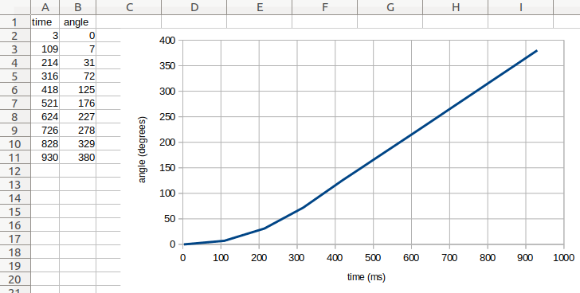

tools -- 時間計測とデータロギング¶
時間計測とデータロギングのための共通ツール。
-
class
StopWatch¶ 時間間隔を測定するストップウォッチです。携帯電話の ストップウォッチ機能に似ています。
-
pause()¶ ストップウォッチを一時停止します。
-
resume()¶ ストップウォッチを再開します。
-
reset()¶ ストップウォッチの時間を0にリセットします。
実行状態は影響を受けません:
- 一時停止していた場合は、一時停止のままです（ただし0になります）。
- 実行中だった場合は、実行中のままです（ただし0から再開します）。
-
-
class
DataLog(*headers, name='log', timestamp=True, extension='csv', append=False)¶ ファイルを作成してデータを記録します。
パラメータ: - headers (col1, col2, ...) -- 列ヘッダー。データ列の
名前です。たとえば、
'time'や'angle'を選びます。 - name (str) -- ファイル名。
- timestamp (bool) --
Trueを選択すると、ファイル名に日付と 時刻が追加されます。これにより、ファイルが一意の名前に なります。Falseを選択すると、タイムスタンプは 省略されます。 - extension (str) -- ファイルの拡張子。
- append (bool) --
Trueを選択すると、既存のデータログファイルを 再び開いてデータを追記します。Falseを選択すると、 既存のデータを消去します。ファイルがまだ存在しない場合は、 どちらの場合でも空のファイルが作成されます。
-
log(*values)¶ 1つ以上の値をファイルの新しい行に保存します。
パラメータ: values (object, object, ...) -- 1つ以上のオブジェクトまたは値。
デフォルトでは、このクラスはEV3ブロック上に
logという名前と 現在の日時を含むcsvファイルを作成します。たとえば、 2020年2月13日10時07分44.431260秒にこのクラスを使用すると、 ファイル名はlog_2020_02_13_10_07_44_431260.csvになります。ログファイルをコンピューターにアップロードする方法については、 EV3上のファイル管理 を参照してください。
- headers (col1, col2, ...) -- 列ヘッダー。データ列の
名前です。たとえば、
例を表示/非表示: 測定値の記録と可視化
例
この例では、時間の経過とともに回転するホイールの角度を記録する 方法を示します。
#!/usr/bin/env pybricks-micropython
from pybricks.ev3devices import Motor
from pybricks.parameters import Port
from pybricks.tools import DataLog, StopWatch, wait
# EV3ブロックのプロジェクトフォルダにデータログファイルを作成する。
# * デフォルトでは、ファイル名に現在の日付と時刻が含まれる。例:
# log_2020_02_13_10_07_44_431260.csv
# * データ列のタイトルをオプションで指定できる。たとえば、
# ある時刻のモーター角度を記録したい場合は、次のようにする:
data = DataLog('time', 'angle')
# モーターを初期化して動かす
wheel = Motor(Port.B)
wheel.run(500)
# 経過時間を測定するストップウォッチを開始する
watch = StopWatch()
# 時刻とモーター角度を10回記録する
for i in range(10):
# 角度と時刻を読み取る
angle = wheel.angle()
time = watch.time()
# log() メソッドを使うたびに、データを含む新しい行が
# ファイルに追加される。値はいくつでも追加できる。
# この例では、現在の時刻とモーター角度を保存する:
data.log(time, angle)
# モーターが少し動けるようしばらく待つ
wait(100)
# これでファイルをコンピューターにアップロードできる
この例では、生成されたファイルの内容は次のとおりです:
time, angle
3, 0
108, 6
212, 30
316, 71
419, 124
523, 176
628, 228
734, 281
838, 333
942, 385
上記のようにファイルをコンピューターにアップロードすると、 スプレッドシートエディターで開くことができます。そこでデータの グラフを作成できます（ 図 18 参照）。
この例では、モーター角度が最初はゆっくり変化していることが わかります。その後、角度の変化が速くなり、グラフは直線になります。 これは、モーターが一定速度に達したことを意味します。角度が 毎秒500度ずつ増加していることが確認できます。

図 18 元のファイル内容（左）と生成されたグラフ（右）。
例を表示/非表示: オプション引数の使用
例
この例では、数値以外のデータを記録する方法を示します。また、
DataLog クラスのオプション引数を使ってファイル名と拡張子を
選択する方法も示します。
この例では timestamp=False となっており、日付と時刻は
ファイル名に追加されません。ファイル名が常に同じになるため
便利ですが、このスクリプトを実行するたびに my_file.txt の
内容が上書きされることになります。
#!/usr/bin/env pybricks-micropython
from pybricks.parameters import Color
from pybricks.tools import DataLog
# my_file.txt というデータログファイルを作成する
data = DataLog('time', 'angle', name='my_file', timestamp=False, extension='txt')
# logメソッドは print() メソッドで1行のテキストを追加する。
# つまり、数値の保存以外にもいろいろできる。例:
data.log('Temperature', 25)
data.log('Sunday', 'Monday', 'Tuesday')
data.log({'Kiwi': Color.GREEN}, {'Banana': Color.YELLOW})
# ファイルをコンピューターにアップロードできるが、データを直接表示することもできる:
print(data)